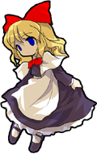

- Welcome to Touhou Wiki!
- Please register to edit. For assistance, check in with our Discord server or IRC channel.
Hourai
Hourai | |
|---|---|
|
 Hourai in Immaterial and Missing Power
| |
| Species | |
| Abilities |
Unknown (Destructive magic?) |
| Occupation |
A doll used in one of Alice's spell cards |
| Location | |
Appearances | |
| Official Games | |
| |
Hourai (蓬莱) is one of Alice's dolls. She's theoretically more powerful than Shanghai due to Shanghai being used by Alice while playing on the hard difficulty setting of Perfect Cherry Blossom and Hourai being used while playing on lunatic. Hourai appears in Alice's spell card Curse "Hanged Hourai Dolls". In Immaterial and Missing Power Hourai was one of Alice's 2nd level spell cards. She had the exact same sprite and effect as Shanghai (the 1st level spell card of the same type), only much stronger.
Concept[edit]
Name[edit]
Mount Hourai (Penglai in Chinese, Fungloi in Cantonese) is a legendary island paradise in East Asian folklore, which was said to be inhabited by immortals who had special powers, and possessed rare treasures as well as the elixir of immortality.
Appearance[edit]
In Immaterial and Missing Power's official art, Hourai wears a long dark purple dress with a white apron and white sleeves, and matching dark purple shoes. There is a large red bow in her hair and a smaller matching bow around her neck. Her eyes aren't seen and her neck is hanged by a rope.
Story[edit]
- Perfect Cherry Blossom
<Insert Main Summary>
Relationships[edit]
- Alice Margatroid (Puppeteer)
- Shanghai (Fellow Doll)
Additional Information[edit]
Trivia[edit]
- She so far has no known relation to either the Hourai Elixir or Kaguya Houraisan, nor even to Fujiwara no Mokou, who also has a spellcard called "Hourai Doll". It is most likely a reference to the aforementioned island paradise of Hourai, since Alice's other spell cards (such as Foggy London Dolls or Red-haired Dutch Dolls) are references to countries or cities.
- As with Shanghai, Hourai is canonically a class of doll rather than a name for one individual doll, and multiple Hourai dolls are seen during its spell card in Perfect Cherry Blossom.
Fandom[edit]
Official Sources[edit]
- 2003/08/17 Perfect Cherry Blossom
- 2004/12/30 Immaterial and Missing Power
| This page is part of Project Characters, a Touhou Wiki project that aims to write proper descriptions for all official characters of Touhou Project. Please keep the character page guidelines in mind when contributing. |